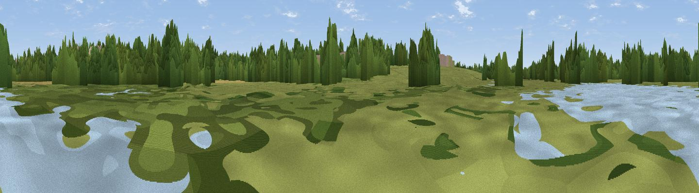

Viaduct Hide
#45653 in England · top 92% of its area beats it · near New HavershamWhere it is
The exact computed spot (SP 81131 42142). Click the marker for map links.
The view, rendered

A 360° render of this exact spot computed from the terrain model, tree cover and land cover — summer colours, afternoon light, calibrated against photographs of famous viewpoints. Real trees, hedges and buildings will differ in detail.
The panorama
Grey silhouette: terrain skyline in each direction (720 bearings, Earth curvature and refraction included). Dashed green: skyline with trees (+15 m) and buildings (+8 m) as obstacles. Blue strip: how far the ground is visible on each bearing.
Where the view opens
Wedge length = distance to the farthest visible ground on that bearing (vegetation-aware). Rings at 10, 25 and 50 km.
What fills the view
39% grassland · 33% woodland · 10% built-up · 9% water · 9% cropland
Angular shares of the visible panorama (visual magnitude), not map area. Landscape diversity 0.61 (0–1 Shannon).
Key numbers
More beautiful places nearby
The staircase of upgrades: each row has a higher view potential than everything closer. Driving times are estimates from straight-line distance, calibrated against real road routing — check an actual route before setting out.
| Place | Direction | Drive | Score |
|---|---|---|---|
| The Belvedere | ESE · 6 km | ~12 min | 15.3 |
| Viewpoint near Sherington | ENE · 9 km | ~18 min | 29.0 |
| Viewpoint near Newton Longville | SSE · 11 km | ~21 min | 30.4 |
| Viewpoint near Bow Brickhill | SE · 13 km | ~23 min | 40.1 |
| Viewpoint near Bow Brickhill | SE · 13 km | ~23 min | 48.9 |
| Viewpoint near Quainton | SSW · 21 km | ~36 min | 64.9 |
| Viewpoint near Church End | SE · 29 km | ~46 min | 65.4 |
| Beacon Hill | SSE · 29 km | ~46 min | 74.1 |
52.07171, -0.81774 · source: osm viewpoint · position refined by local search. Computed location — check access rights before visiting.